👋 About Me
7년간 레저 기반 B2C 플랫폼을 기획하고 직접 개발 및 운영했습니다. 실시간 티켓 유통, 현장 솔루션(POS·KIOSK·검표기 등), API 연동, 자사몰 구축, 수익구조 설계까지 전 과정을 주도했으며, 해당 플랫폼은 전략적(IPO) 합병을 경험하였습니다.
📊 주요 성과 요약
130억
연간 티켓 유통 매출
40+곳
POS·KIOSK 납품 시설 수
10억 규모
전략적(IPO) 인수합병
📌 시스템 개발 히스토리
API 연동 서버 및 CMS 시스템은 2015년부터 구축되어 2024년까지 지속적인 기능 확장과 성능 개선이 이뤄졌습니다. 단순 소셜/오픈마켓 판매자가 아닌 유통 허브로서의 역할을 수행했으며, 네이버예약·쿠팡·티몬·위메프·인터파크·야놀자 등 20개 이상의 채널과 직접 연동하여 고객과 현장을 연결했습니다.
볼베어파크, 바운스트램폴린, 베어스타운, 용평리조트, 대명리조트, 투어패스, 인터파크·야놀자 외 200곳 이상의 업체와 협업하였고, 이후 2020년부터는 독자적인 POS·KIOSK 시스템을 개발하여 현장 통합 솔루션을 제공하며 규모가 큰 테마파크·키즈파크 위주로 50곳 이상에 납품을 진행하였습니다.
전체 시스템의 설계와 개발에는 100% 직접 참여하였으며, UI/UX 디자인은 외주 또는 내부 리소스를 활용해 구현했습니다. 디자인 측면에서 완성도는 제한적일 수 있었지만, 기능 중심의 실용성과 운영 효율성을 최우선으로 고려하여 설계되었습니다.
프론트엔드는 HTML, CSS, jQuery 기반으로 구성되었고, 대부분의 화면은 AJAX를 활용한 PHP 연동 방식으로 비동기 처리되었습니다. 특히 POS 서버는 Docker 및 Git 환경을 기반으로 구성되어 있어 배포 및 확장에 유연한 구조로 운영되었습니다.

🖥️ 시스템 구성 요약
1. 채널별 & 시설 API 연동 서버
- 서버 구성: Linux (CentOS 7) + Apache + PHP
- DB: MySQL (다중인덱싱, 트리거, 파티셔닝 적용)
- 기타: 배치, 쉘 스크립트 기반 스케줄러 운영
2. CMS 서버
- 서버 구성: Linux (CentOS 7) + Apache + PHP
- DB: MySQL (다중인덱싱, 트리거, 파티셔닝 적용)
- 기타: 배치, 쉘 스크립트 기반 스케줄러 운영
3. POS & KIOSK 서버
- 서버 구성: Linux (CentOS 7) + Docker + Apache + PHP
- DB: MySQL (다중 인덱싱, 파티셔닝, 트리거 사용)
- 버전 관리: GitHub + Git
- Client(웹뷰+장치제어): c#
- 프론트엔드 UI: Bootstrap 기반 템플릿 활용
- 기타: 배치, 쉘 스크립트 기반 스케줄러 운영
- 하드웨어 제어: 빅솔론·새우테크 프린터, 카드리더기(KCP·나이스), 게이트·문 제어 연동
4. 게이트 제어 서버
- 서버 구성: Windows 환경 + C# + JavaScript
- DB: MySQL
🎟️ CMS 티켓 유통 통합 시스템
네이버예약, 쿠팡, 티몬, 위메프, 인터파크 외 20개 이상의 커머스 채널과 API 연동하여, 레저 티켓 전용 유통 구조를 구축했습니다. 배송상품과 달리, 레저 티켓은 고객에게 모바일 쿠폰을 발송하고, 현장에서 사용처리된 내역을 다시 채널에 반영해야 환불을 방지할 수 있기 때문에 각 채널별로 프라이빗 API 연동을 별도로 진행했습니다.
📌 주요 기능
- 채널별 구매 고객 리스트 통합
- 계약 업체 중 자체 시스템이 있는 경우 → API 포맷 맞춰 가공 전달
- 자체 시스템이 없는 경우 → 자체 제공 웹 포스(Web POS) 기능 활용
- 판매 현황 및 정산 내역 등 실시간 통계 제공
- 내부 운영을 위한 인트라넷 기능 포함 (채널 등록, 상태관리 등)
- 자체 POS 시스템과 연동되어 현장 발권/사용처리 자동화
해당 CMS 시스템은 이후 POS·KIOSK와 결합되어, 테마파크·대형 키즈카페 등의 핵심 시설을 락인(Lock-in)시키는 전략의 기반이 되었습니다.
📂 CMS / 주요 기능
1. 실시간 주문내역 통합 조회
판매 채널별 주문내역을 실시간으로 수집·분류하며, 발권·POS 연동·정산까지 한 화면에서 처리 가능한 UI입니다.
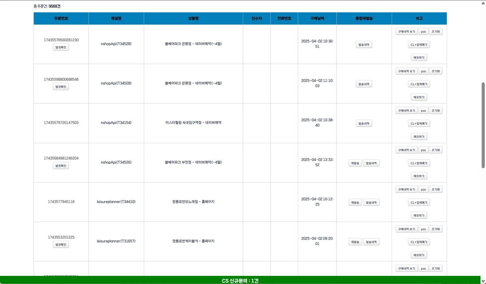
2. 회차별 좌석 / 티켓 관리 화면
시간대별 티켓 옵션, 잔여 수량, 바코드 정보 등 회차별 판매 정보 관리를 담당하며
검표 시스템과 실시간 연동됩니다.
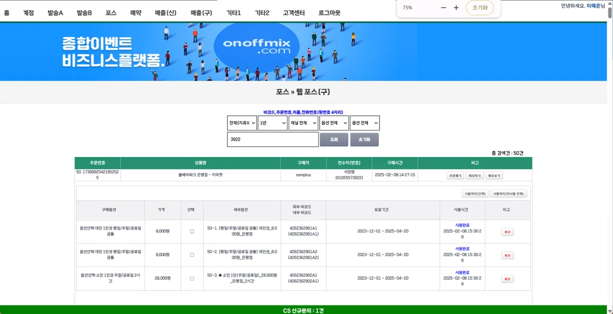
3. 매출 분석 리포트
판매 채널별 매출과 정산 금액을 시각화하고, 수익률/수수료 구조 분석을 통해 마케팅 우선순위를 기획하는 데 활용했습니다.
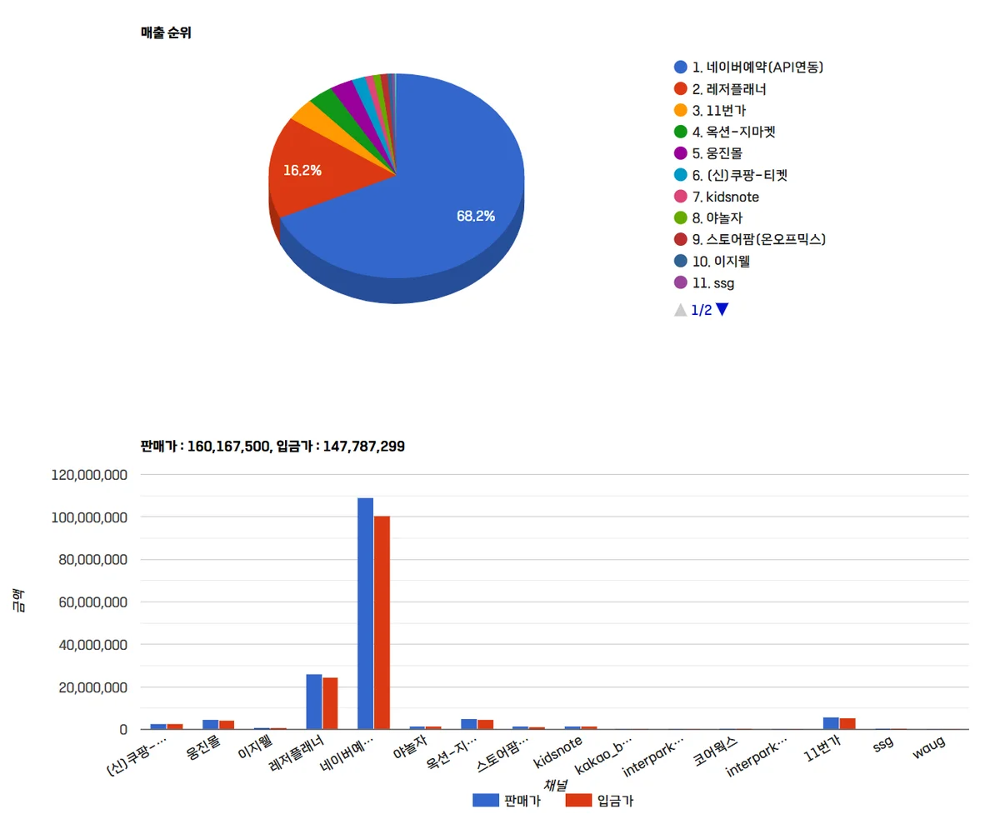
4. API 연동 대기 및 오류 모니터링
외부 채널 연동 시 발생하는 오류 및 API 수신 상태를 실시간으로 모니터링하며,
장애 감지 → 복구 요청 → 재처리까지의 흐름을 자동화했습니다.
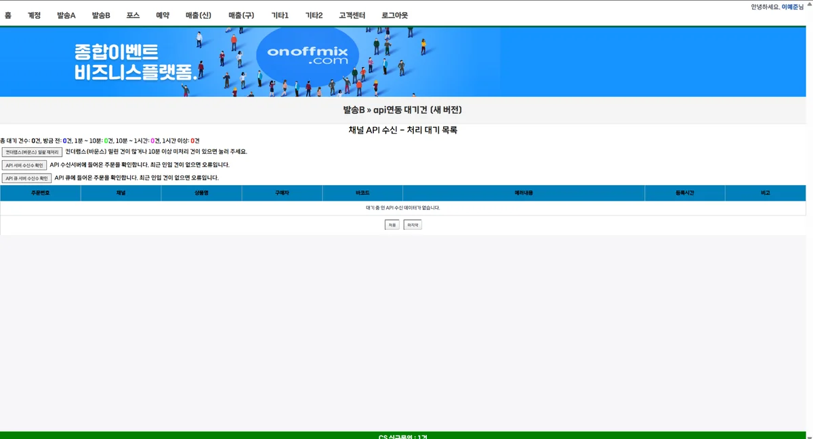
5. 모바일 고객 문의 통계 시각화
기존 모바일 입장권 UX를 재구성하고, 전화 없이도 예약 및 기타 문의가 가능하도록 개선하였습니다.
이 기능 도입 후 이용자 행동을 히트수로 분석한 결과, 실제로 문의 버튼 이용률이 높았고 전화 문의도 유의미하게 감소했습니다.
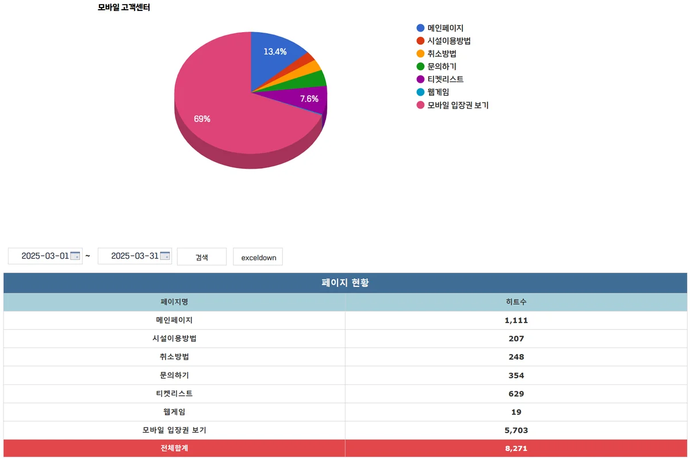
6. 모바일 고객 문의 리스트 관리
고객 문의 시 필요한 주문 정보, 구매처, 사용일 등을 한눈에 확인할 수 있도록 구성하였으며,
고객지원팀이 환불 처리, 예약 변경 등을 실시간으로 대응할 수 있도록 일체형 UI로 개선했습니다.
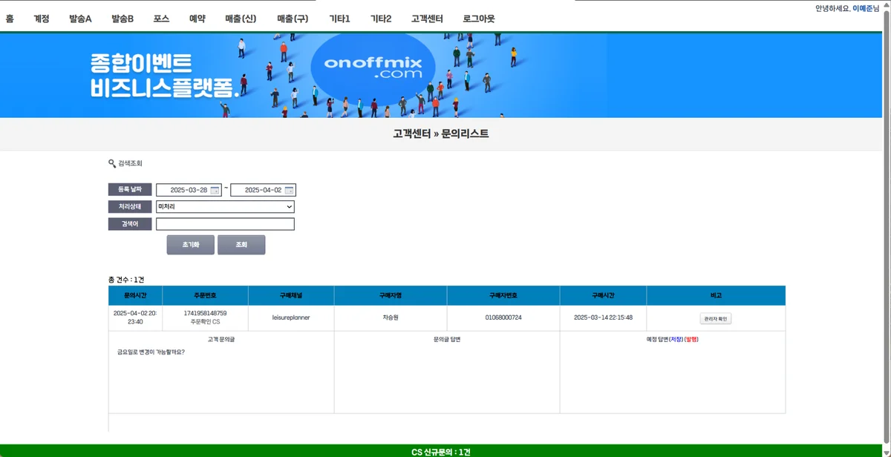
7. 모바일 구매 고객 화면
주문 정보, 구매처, 사용일 등 주요 정보를 직관적으로 확인할 수 있도록 구성하였으며,
전화 없이도 고객이 환불&예약 변경을 요청할 수 있도록 일체형 UI로 개선했습니다.
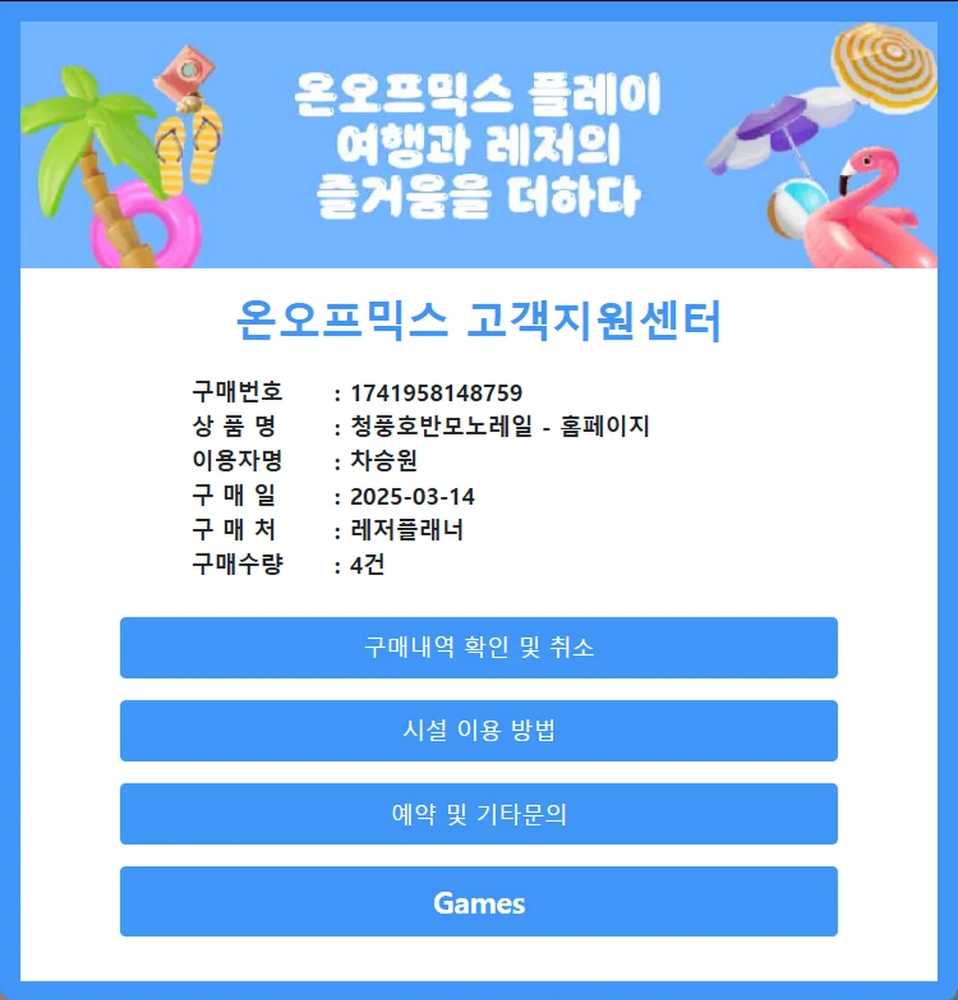
📂 POS 시스템 / 주요기능
주요 거래처를 락인(Lock-in)하기 위한 전략적 도구로 POS 시스템을 설계하고 개발했습니다. 티켓 발권, 회차 관리, 실시간 검표, 주방 연동 프린터 등 현장 운영의 핵심 기능을 통합 제공함으로써, 고객사는 자연스럽게 우리 시스템을 지속적으로 사용할 수밖에 없는 구조를 형성했습니다.
1. 현장 판매 화면
VAN 결제 및 품목에 따라 F&B 주방프린터&티켓 발권 등 제어 됩니다.
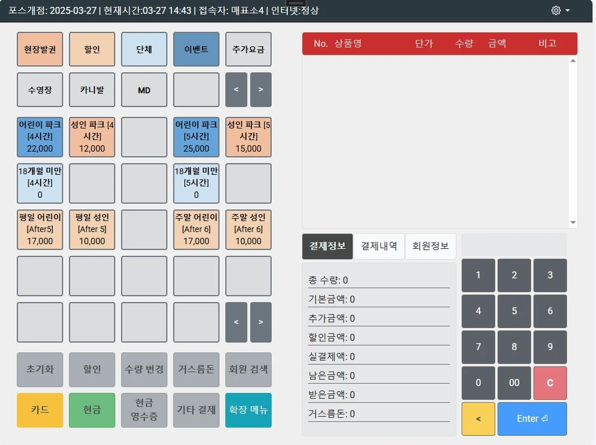
2. 온라인 주문 조회 및 검표
네이버예약, 인터파크 등 외부 채널을 통해 구매된 티켓을 검색하고
현장에서 직접 검표할 수 있도록 설계된 통합 UI입니다.
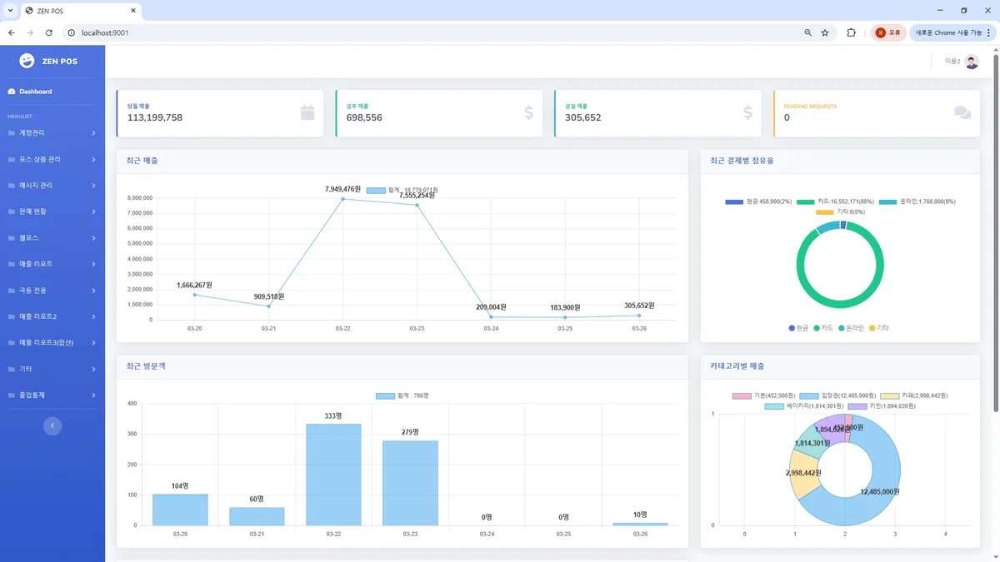
3. 후방 운영 어드민
매출 통계, 결제 수단별 분석, 방문자 수 데이터 등을 한눈에 볼 수 있는 대시보드를 제공하며,
시설 운영자 또는 프랜차이즈 관리자에게 실시간 경영 데이터를 시각화해 제공합니다.
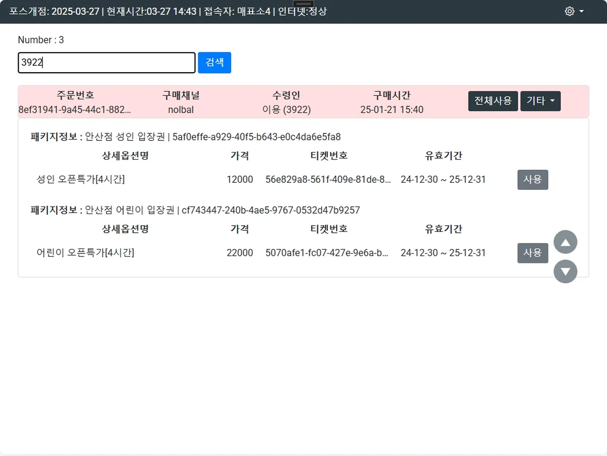
🎫 키오스크 주요 화면
1. 키오스크 메인 화면
온라인 발권, 현장 구매, 결제 확인까지 직관적인 버튼으로 구성하여 누구나 쉽게 이용 가능하도록 구성했습니다.
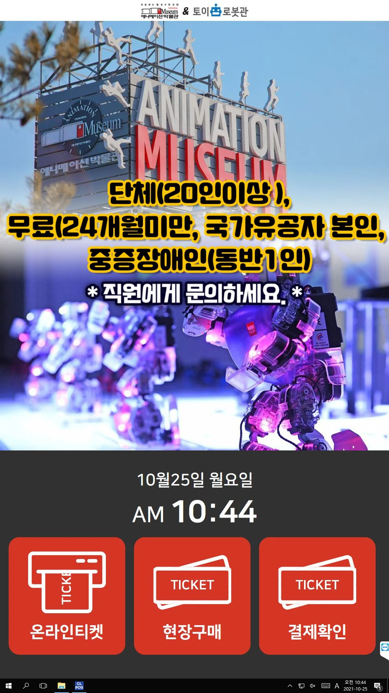
2. 티켓 선택 및 결제 화면
연령대별 입장권을 구분하여 사용자 혼선을 줄이고,
총 결제 금액을 직관적으로 확인할 수 있는 UI로 설계되었습니다.
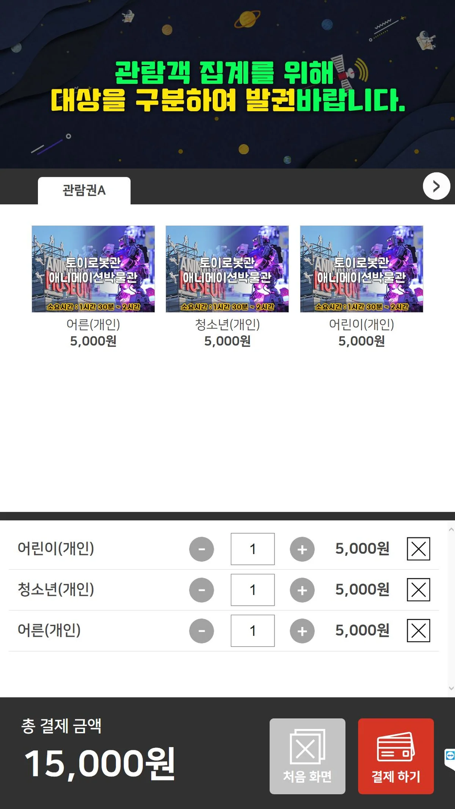
3. 온라인 티켓 발권 화면
현장에서 고객이 온라인 구매 티켓을 직접 조회·발권할 수 있는 기능으로,
현장 CS 인력을 줄이고 대기 시간을 개선하는 효과를 가져왔습니다.
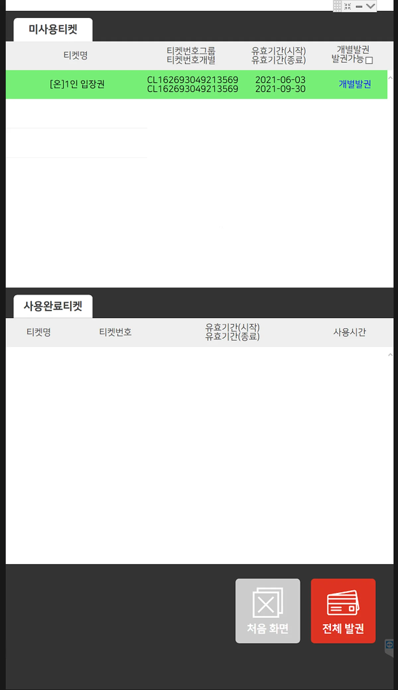
4. 풀영상(구매&카드발권&게이트)
🔍 PDA 검표 시스템
1. 검표 시스템 로그인 화면
PDA 기기에서 사용 가능한 웹 기반 로그인 화면으로, 시설별 독립 도메인을 통해 접속 가능합니다.
관리자 권한에 따라 검표 계정 및 검표 위치(상부/하부 등)를 관리합니다.

2. 검표 정상 처리 화면
고객 티켓의 정보(이용 일시, 권종, 가격, 검표 위치 등)를 확인 후, 정상 입장 여부를 안내하는 검표 화면입니다.
QR 또는 숫자 입력 기반으로 빠르게 검표할 수 있습니다.

3. 이미 사용된 티켓 검출 화면
중복 입장을 방지하기 위해 사용된 티켓은 오류 메시지와 함께 표시되며,
현장 인력이 즉시 확인 후 대응할 수 있도록 설계되었습니다.

🔍 PDA 검표 시스템
기존에 설치된 게이트에 별도의 장치를 장착하여, 내부 네트워크 및 서버 연동을 통해 게이트를 원격 제어할 수 있도록 구성했습니다.RS232 기반 통신을 통해 서버에서 신호를 수신 후 입장 처리하며, 제어 단말기는 현장 맞춤형으로 제작되었습니다.
게이트 제어 장치 연결 과정
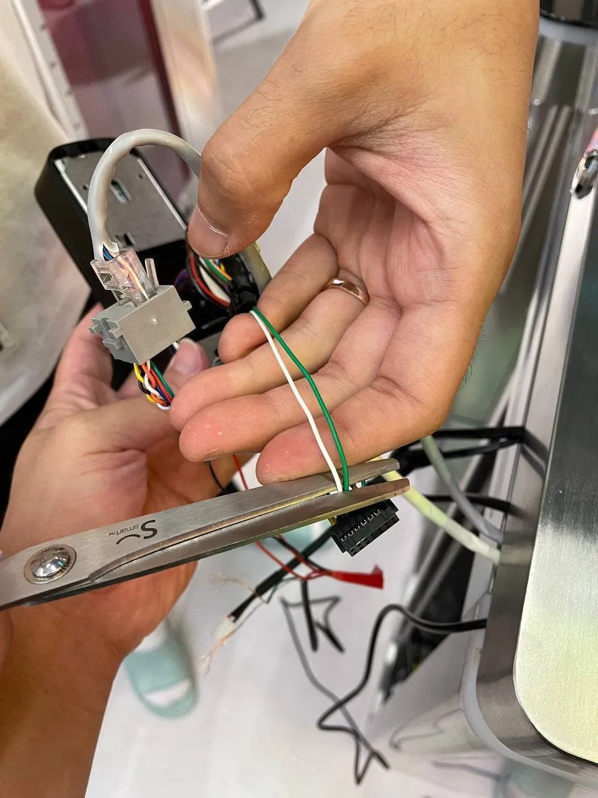
게이트 제어 장치 연결 과정
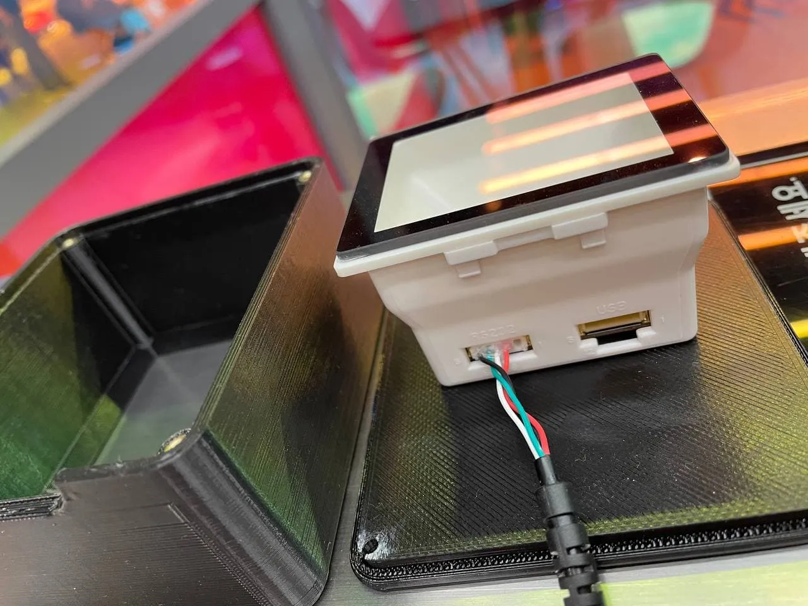
게이트 제어 장치 연결 후 앞면
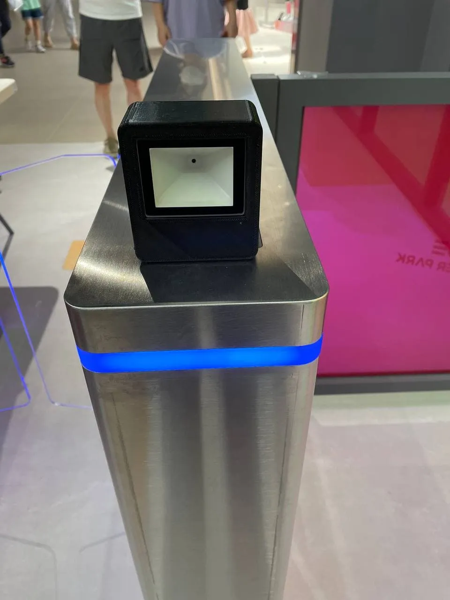
게이트 제어 장치 연결 후 옆면
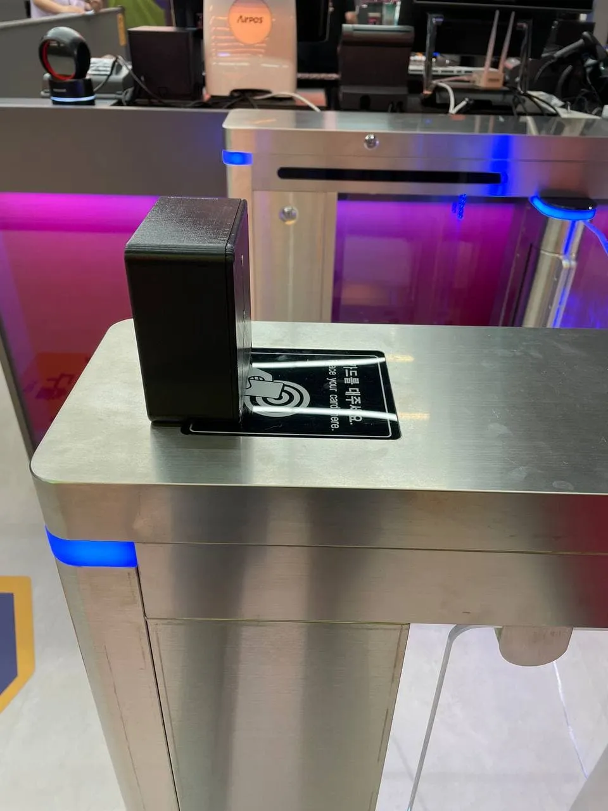
📦 다회권 발급 시스템
1. 포스에서 다회권 발급
POS 화면에서 다회권 상품을 선택해 결제 완료 시, 고객 전화번호 기반으로 모바일 티켓이 자동 발송됩니다.
매장 직원은 회원 여부에 관계없이 전화번호 기반 결제가 가능합니다.
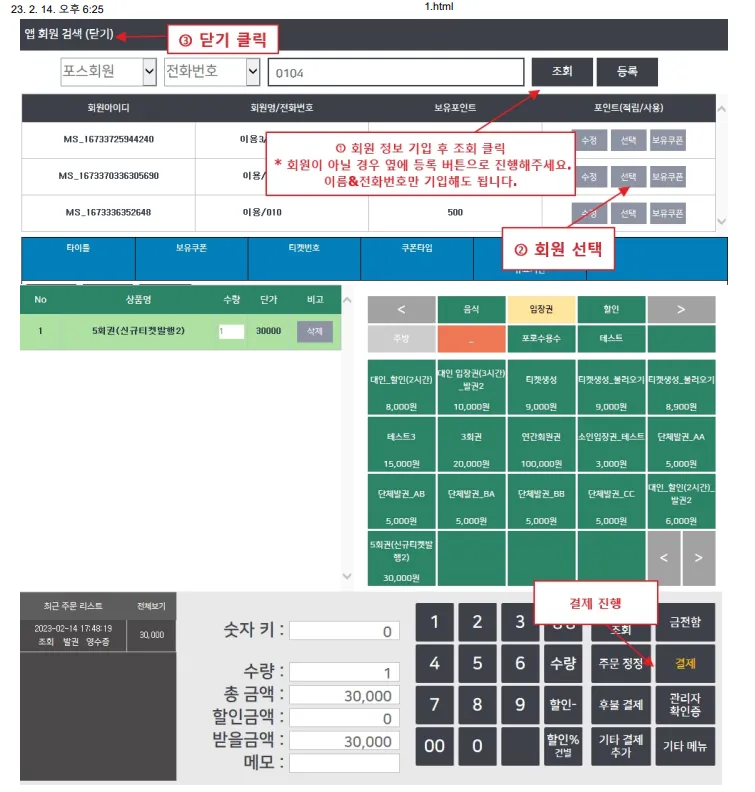
2. 모바일 티켓 자동 발송
결제 완료 후 카카오 알림톡을 통해 다회권 티켓이 고객에게 전송되며,
고객은 티켓 정보와 함께 바로 사용하거나 잔여 회차를 확인할 수 있습니다.
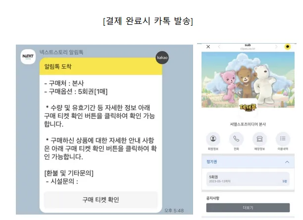
🎧 오디오 가이드 서비스
클라우드 기반 VOD 스트리밍 서비스를 신청하여 음원 파일이 무단으로 다운로드되지 않도록별도 개발 및 연동하여 실시간 재생 방식으로 제공하였습니다.
1. 오디오 가이드 시작 화면
인터파크 전시 연계 서비스로, 티켓 구매 고객에게 오디오 가이드 링크를 문자로 발송합니다.
전시 포스터 기반 화면으로 브랜딩을 유지하고, 안내 메시지를 함께 제공합니다.
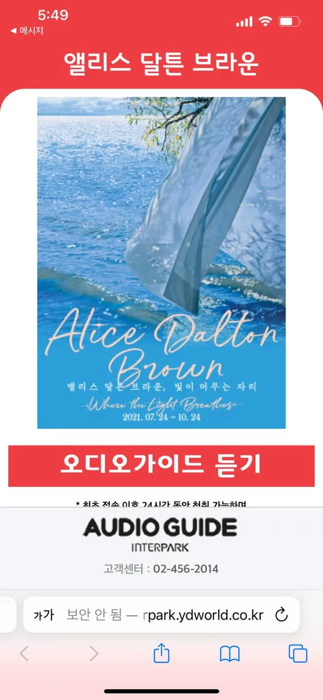
2. 이용 전 알림 팝업
최초 실행 시 환불 불가 안내와 함께 사용자 확인을 유도하여, 의도치 않은 실행을 방지합니다.
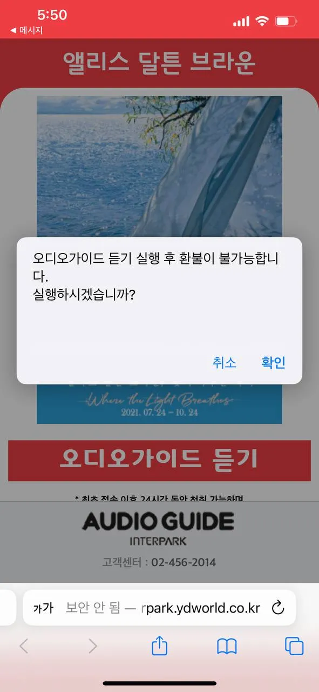
3. 번호 선택 / 직접 입력
작품별 번호를 입력하거나 리스트에서 선택할 수 있으며, 키패드 입력 방식도 지원합니다.
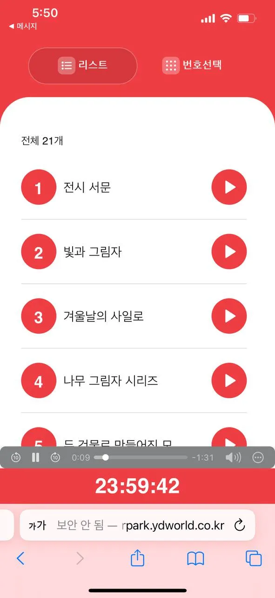
4. 리스트 보기 화면
전체 항목을 리스트 형태로 제공하여, 사용자는 자유롭게 순서를 선택해 감상할 수 있습니다.
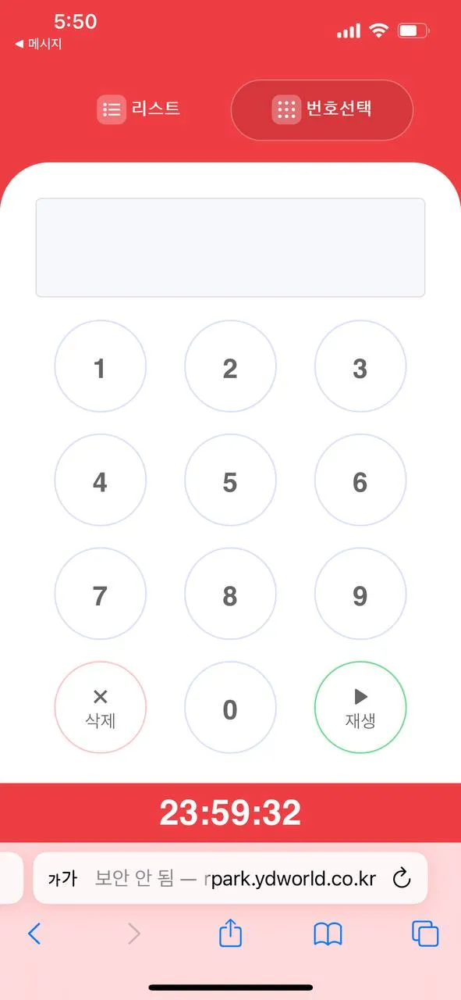
5. 번호 입력 및 재생 진행
입력된 번호에 따라 자동 재생되며, 재생 중 남은 시간도 시각적으로 표시됩니다.
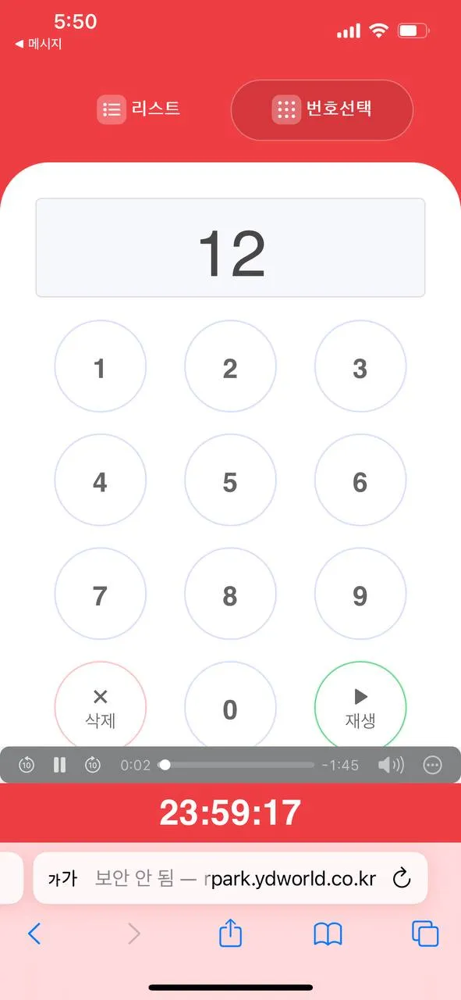
6. 반복 청취 지원
전시 기간 중 티켓당 24시간 동안 반복 청취가 가능하도록 구현되어, 관람 중 자유롭게 이용할 수 있습니다.
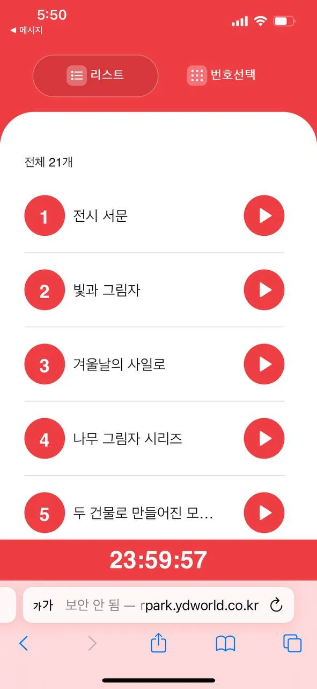
⏳ 웨이팅 신청 서비스
1. 웨이팅 신청 화면
혼잡한 주말이나 피크타임에 고객이 현장 줄을 서지 않고,
휴대전화 번호를 통해 입장 대기 신청을 할 수 있도록 구성된 모바일 UI입니다.
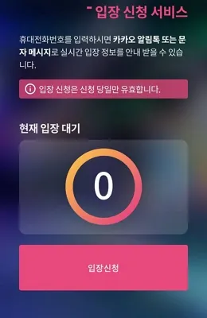
2. 실시간 호출 화면
직원은 관리자 페이지 또는 전용 앱에서 신청자 명단을 확인 후,
프론트 모니터를 통해 고객을 실시간으로 호출할 수 있습니다.
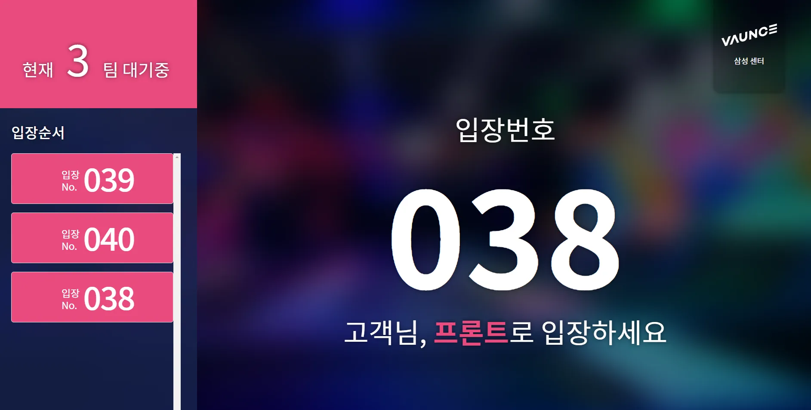
⛳ 스크린 골프 예약 시스템
1. 대기 화면
온오프믹스에서 제공하는 골프 예약 시스템을 통해서만 스크린 골프 게임이 가능합니다.
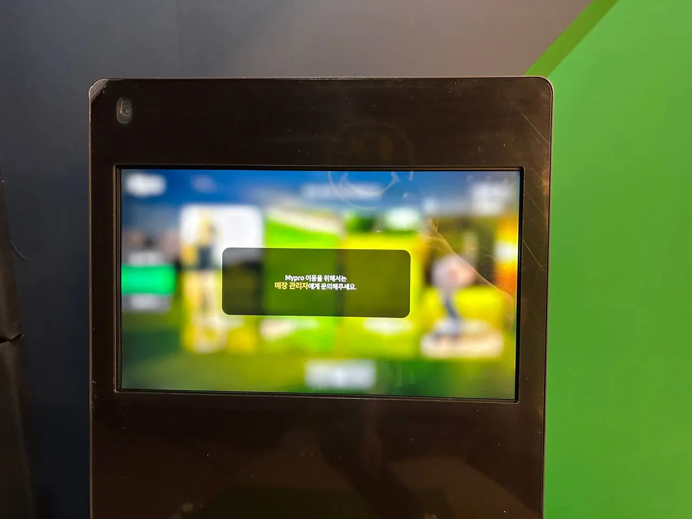
2. 골프 게임기 제어
예약된 시간이 다가오면 예약자 정보 출력이 되며 스크린 골프 게임이 가능합니다.
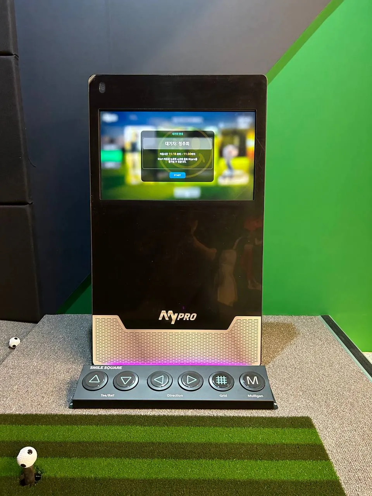
3. 연동 예약 알림톡
실제 스크린골프 업체와 API를 통해 연동되어 있으며,
고객은 예약 후 카카오 알림톡을 통해 시간과 타석 정보를 실시간으로 전달받습니다.
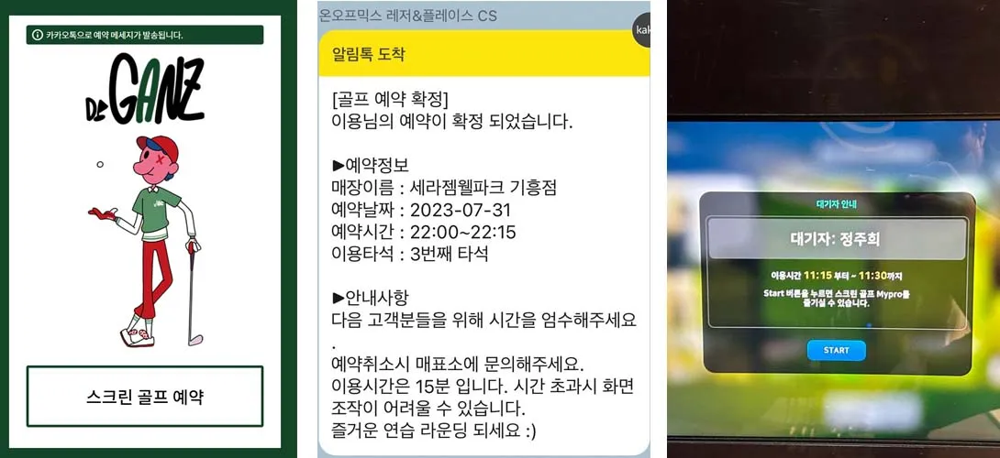
4. 사용자 예약 인터페이스
태블릿 기반의 현장용 UI를 통해
성별, 시간, 타석 번호, 이름, 전화번호 입력으로 간편한 예약이 가능합니다.
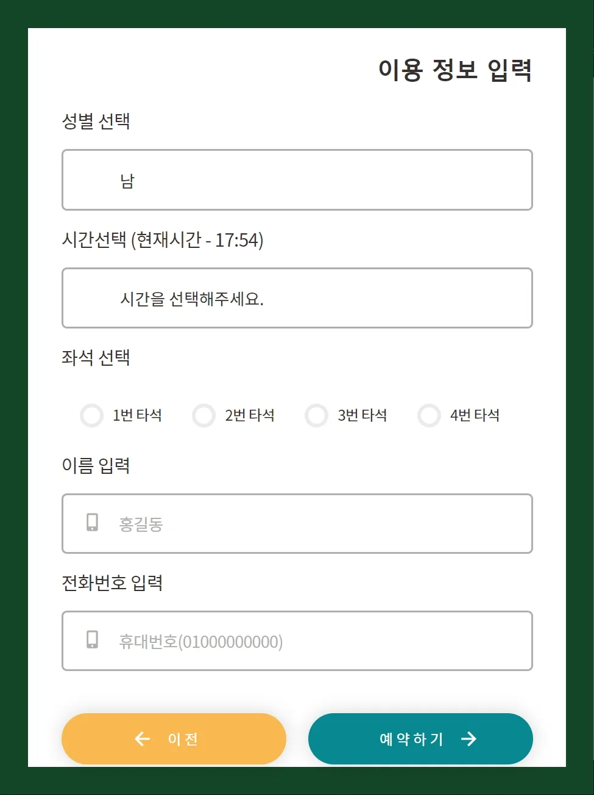